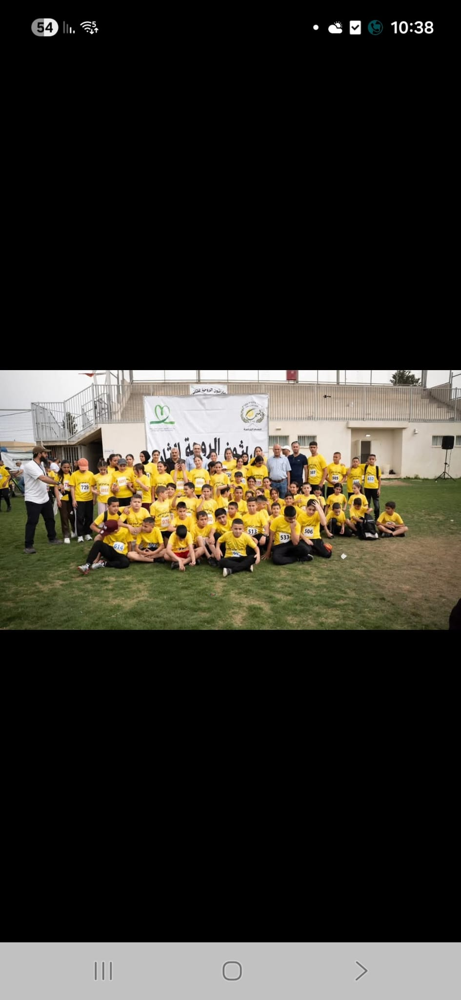

اختر تحدّيك
اطّلع على الموعد، المكان والمسافات.
RUN MSAFAT / مساحة للجري
14.11.2026 · بتنظيم جمعية أمانينا
التسجيل مجاني. سجّل مشاركتك وكن جزءًا من الحكاية.
موعدك مع التحدّي
مسافات مختلفة. حماس واحد.
معاينة فقط؛ شغّل الخادم لحفظ التسجيلات وعرضها للأدمن.
لا توجد سباقات في هذه الفئة حاليًا.
حركة تجمعنا

Run Msafat منصة تجمع محبّي الجري، وتسهّل اكتشاف السباقات والتسجيل فيها.
نؤمن أن البداية متاحة للجميع، من الجري العائلي إلى تحدّي المسافات الطويلة. اختر تجربتك، سجّل مشاركتك، واستعد للقاء مجتمع يشاركك الحماس.
سجّل مشاركتكمن حكايات الجري في مجتمعنا
لحظات من فعاليات الجري: لقاء، تنظيم، وروح فريق.
صور وفيديوهات وإعلانات شاركها المنظّم.





من الاختيار إلى خط البداية
اختر السباق والمسافة المناسبة لك.
اترك لنا التفاصيل، وجهّز حذاءك.
اطّلع على الموعد، المكان والمسافات.
أدخل بيانات الطالب، مقاس البلوزة وموافقة ولي الأمر.
تذكير قبل السباق بـ24 ساعة بعد تفعيل خدمة الإرسال.